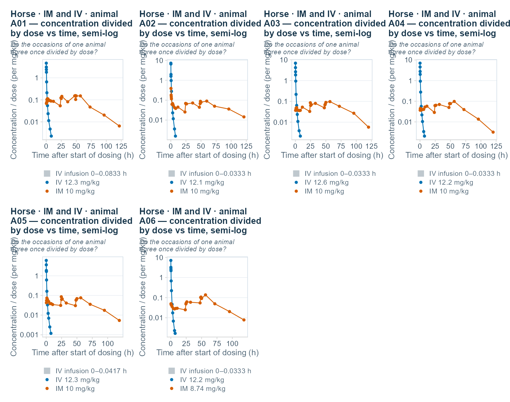
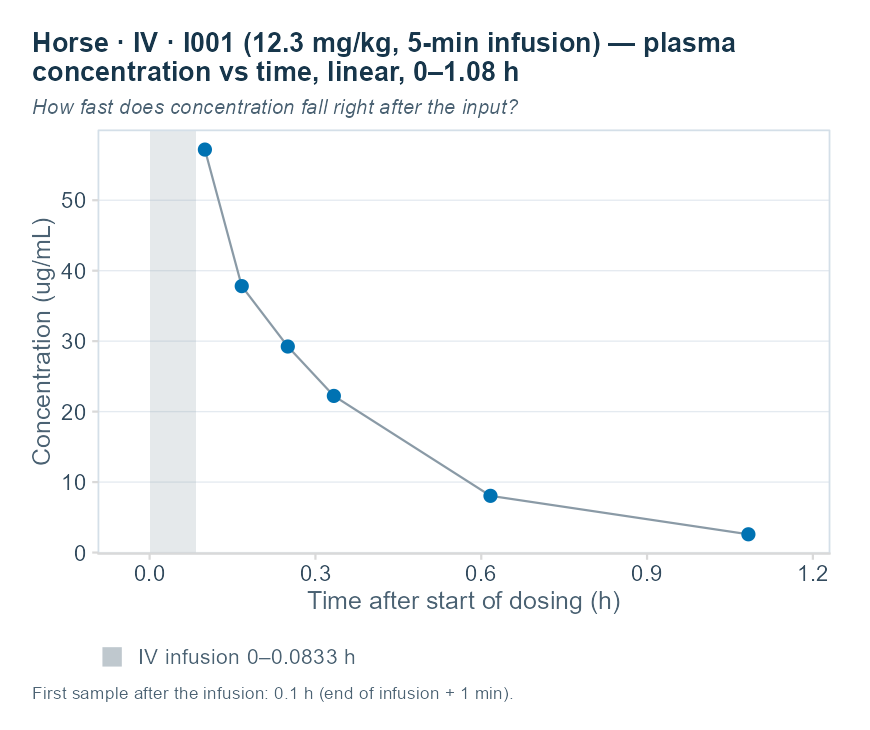

DBG03
Explore the observed animal PK profiles, tissue context and elimination evidence by category and species.
Descriptive EDA 49 panel references on the category cards · 53 PNG files in All figures
Review by category
Open a category for its species summaries, questions and evidence. A category may reuse a figure from another section.Summary
Data. 6 horses dosed by IM (three doses, 24 h apart) and IV (one dose) (12 plasma profiles); concentrations were measured in plasma.
Absorption. Taken together, the curves point to a second rise after the first peak in one of the 6 horses, before the second dose, and a slow late decline set by absorption. Start with one first-order absorption input as the reference fit, then test a second input episode, flip-flop kinetics and enterohepatic recycling against it. Indirect hints also point to other input shapes and more than one disposition compartment; try these only if the reference fit leaves a pattern. These data hold no evidence for or against a delayed start, dose-dependent absorption, saturable elimination and concentration-dependent binding, so they stay untested.
Distribution. All 6 horses show a fast early decline followed by a slower terminal phase on the semi-log plot. Use at least two compartments: start with a two-compartment model with between-animal variability on clearance and the central volume, and choose the terminal window by eye on each profile. In 5 of 6 horses the decline still bends after the early points are dropped, so a three-compartment model is a candidate; test it against two. A one-compartment model is kept only as the baseline fit, because the data do not formally rule it out.
Elimination. In all 6 horses after IV dosing the late points fall on a straight line on the semi-log plot, with a terminal half-life of about 1.4 h. Model elimination as one linear clearance from the central compartment, with between-animal variability on clearance. Only one dose level per route was given, so dose-dependent (nonlinear) clearance cannot be tested. There are no urine or metabolite data, so only total clearance can be estimated. After IM dosing the late decline is much slower than after IV dosing (half-life about 17 h), so absorption sets it there; anchor elimination on the IV data. As a check, the slowest phase of the fitted model should decline with a half-life of about 1.4 h.
Starting model. Start with a two-compartment model (at least two compartments; test three), first-order absorption from the time of dosing and one linear clearance; compare it with simpler and richer models before keeping it.
Gaps. No unbound fraction in plasma; no urine data, so renal clearance cannot be separated; bioavailability is not computed from these data.
Absorption
How the drug gets into the blood after non-IV dosing: when it starts, how fast, whether there is a second rise or a long tail, and how much gets in. One page per species: Horse (29).

Distribution
Where the drug goes after it reaches the blood: how many decline phases IV data show, the size of the central volume, tissue levels and protein binding. One page per species: Horse (14).



Elimination
How the drug leaves the body: the terminal phase of each animal, clearance from dose and exposure, urine, recovery and metabolites. One page per species: Horse (6).


Evidence and status
Descriptive EDA generated from the retained source tables. Model fitting and scientific release have not been performed. Review the source-specific limitations on each species page.
Input coverage
2 input tables, 2 used by at least one section. 1 of them are not used in some sections simply because those sections do not ask about that kind of data; the reasons are listed in coverage.json.
No input table is unused for any other reason.